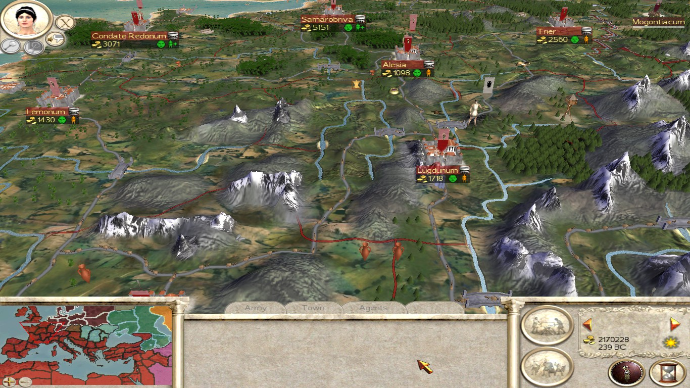
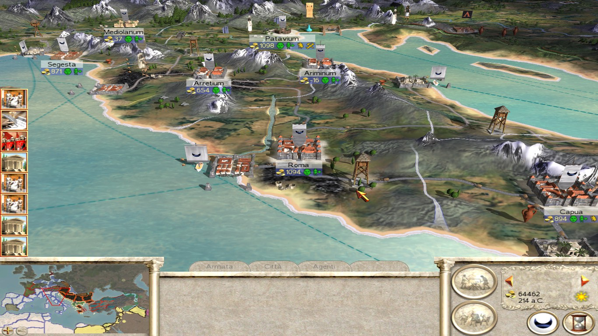
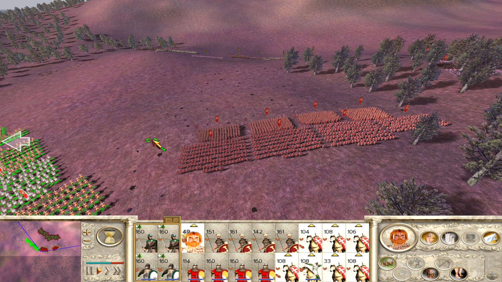
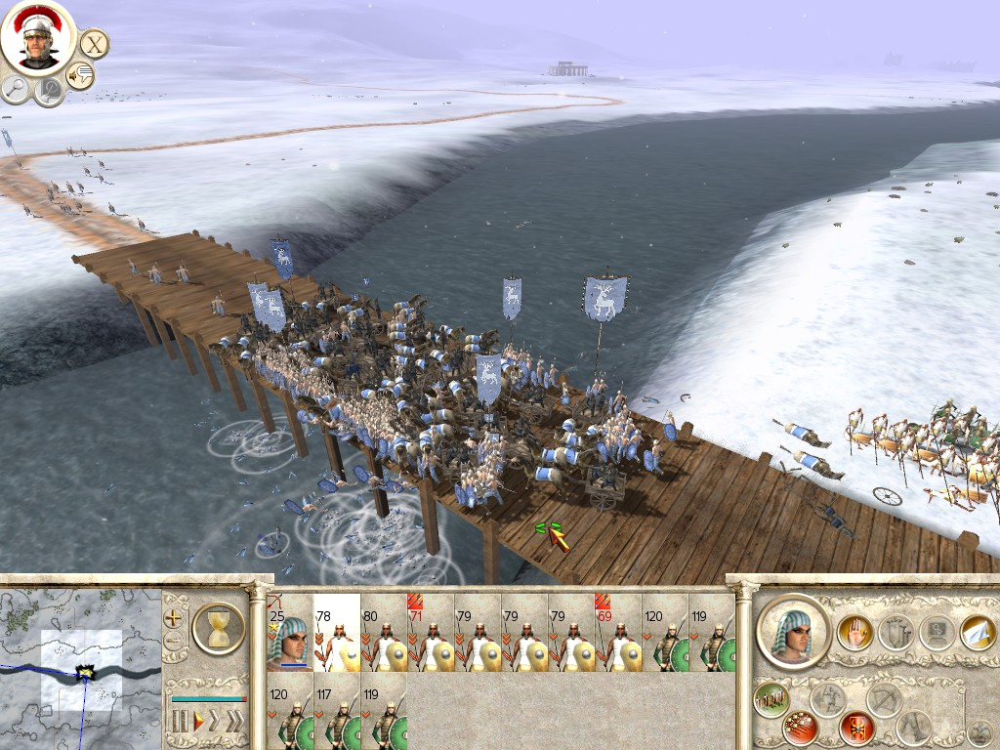
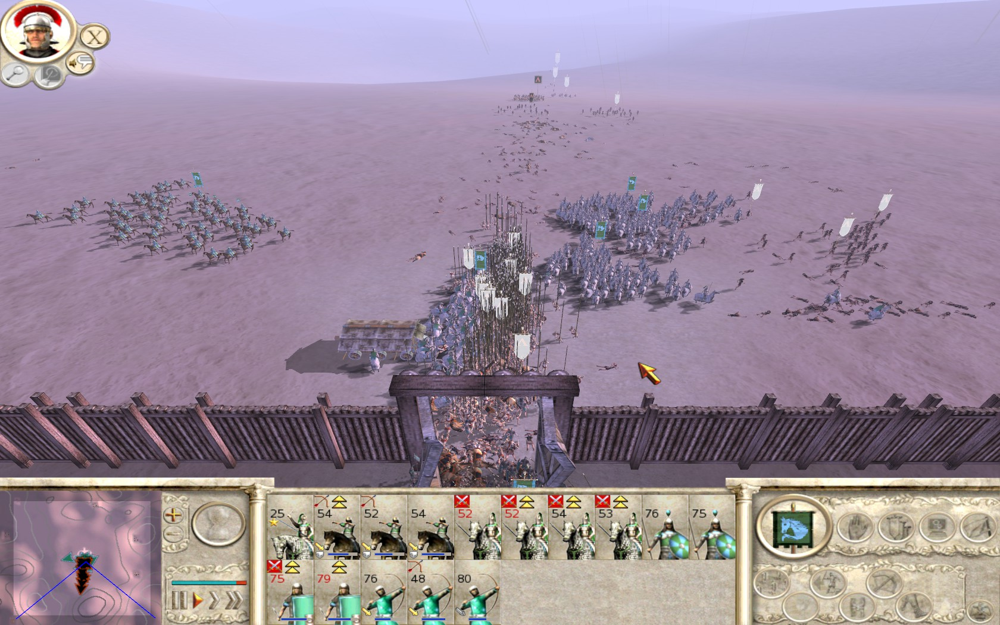
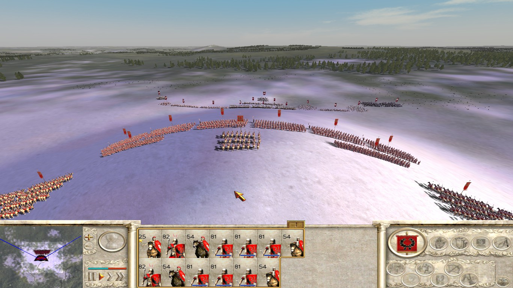
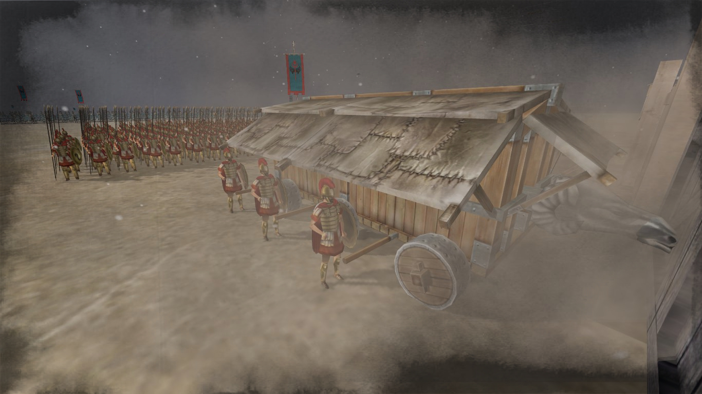
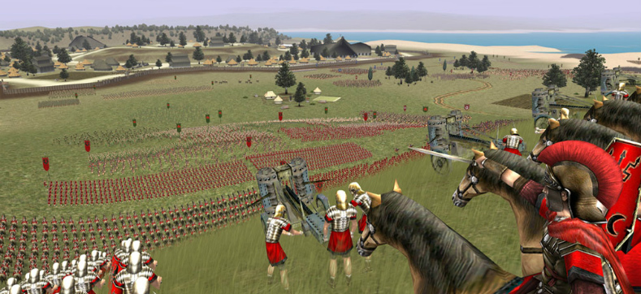

ROME: TOTAL WAR
Timidi mater non flet
270 î.e.n. este anul în care Republica Romană devine puterea dominantă a Peninsulei Italice. Din acest motiv, același an dă și startul campaniei din ROME: TOTAL WAR (RTW), campanie dedicată secolelor în care Republica şi-a extins influenţa pe cuprinsul Mediteranei. Trebuie subliniat de la început că, deși aparent ne aflăm în fața unui joc de strategie de proporții grandioase, adevăratul merit al lui RTW este atmosfera. Este un simulator dedicat firilor visătoare cărora le place să se piardă în fantezii romanțate, de multe ori puternic deviate de la realitățile trecutului istoric, într-un areal geografic concentrat pe Bazinul Mediteranean, dar care cuprinde parţial şi Nordul Europei, Stepa Eurasiatică şi Orientul Mijlociu.
Lumea virtuală este adusă la viață printr-o folosire iscusită a paletei cromatice și a sunetelor ambientale. Deșerturile sunt orbitoare şi răscolite de un vânt aspru. Dunele sunt bătute de cămile, iar în jurul oazelor de un verde vibrant se strâng elefanți. Malurile Mediteranei sunt mereu îmbietoare și răsună cu ropotul valurilor albastre. Europa este acoperită de păduri întunecate, care foșnesc ușor în vânt, de smârcuri şi mlaştini. Ciripitul păsărilor şi urletele lupilor se pot auzi din Galia până în Stepă. Iarna, o pătură de zăpadă se întinde neîntrerupt dinspre Nord, având frontiera de-a lungul Caucazului, prin Crimeea, Balcani, Alpi şi până la Pirinei.
Din punct de vedere politic, tot acest teritoriu este împărţit în provincii controlate de 21 de facţiuni, dintre care 11 sunt accesibile în campanie, iar 20 sunt disponibile pentru multiplayer. Modelarea propriu-zisă a facţiunilor este cel puţin discutabilă când vine vorba de acurateţe istorică. De exemplu, frontierele Republicii Romane cuprind toată Peninsula, lucru fals la data respectivă, iar ea este mai departe împărţită în regiuni autonome între Senat şi trei familii de patricieni, dintre care numai două (şi alea cu numele scrise greşit) au o bază istorică în spatele rolului ce le este atribuit. Triburile barbare sunt prezentate ca nişte uniuni regionale de hipioţi nobili, Egiptul Ptolemeilor ţine mai degrabă de mileniul care precede naşterea civizaţiei romane, iar cetăţile greceşti sunt unite sub domnia unui rege spartan. Punii sunt foarte puny. Greu de imaginat că ar fi putut să aibă vreodată pretenţia de a fi rivalii Romei, la cât de prăpădiţi sunt. Imperiul Seleucid este redus la mai puţin de jumătate din teritoriul pe care încă îl avea, cel puţin la nivel nominal, la acea dată, cu zone extinse cedate în mod nerealist parţilor.

Indiferent de alegere, instalarea noastră la butoanele puterii este punctată de zborul unei acvile, după care ne trezim în administrare cu o mână de teritorii aflate în paragină, câţiva desculţi care pretind a fi forţe militare şi o vistierie goală, sau după caz, plină cu nisip. Singura speranţă la un viitor glorios vine din partea nobililor care mijlocesc voinţa noastră asupra lumii din joc. Fiecare facţiune are la cârmă câţiva bărbaţi de toată isprava, viteji, ambiţioşi şi gospodari. Femeile joacă numai rolul de a perpetua familia (funcţie de virilitatea soţului, dar e bine să păstrăm discreţia asupra acestor chestiuni) şi de a fi bunuri decorative, în sensul că o nevastă fără cusur adaugă un plus de valoare la prezentarea soţului pe scena politică, pe când o bagaboantă are un efect advers. De remarcat că acest lucru nu este întru totul adevărat pentru bărbaţi. Un general ale cărui aventuri extraconjugale sunt de notorietate nu va avea o reputaţie excelentă în lumea bună, dar se va bucura de respect crescut în rândurile soldaţilor.
Obiectivele la care putem năzui sunt trei la număr. Campania scurtă are condiţiile de victorie unice fiecărei facţiuni şi se referă la ocuparea unui număr destul de mic de teritorii si eliminarea unor vecini înainte ca altcineva să-şi atingă cerinţele specifice. Campania mare are aceeaşi finalitate pentru toată lumea: ocuparea Romei şi a unui număr imens de teritorii. Dacă nici asta nu este suficient, gloria deplină poate fi atinsă prin cucerirea întregii hărţi. În cele ce urmează, sunt tratate metodele prin care aceste obiective pot fi îndeplinite.
Money and legal ways to separate individuals from their money are always of service to the state - despre dobândirea averilor ilicite
Dezvoltarea infrastructurii teritoriale şi orăşeneşti, pregătirea şi întreţinerea armatei şi a flotei, salariile generalilor şi agenţilor, toate necesită bani. Mai precis, necesită mormane ridicol de mari de bani. Cea mai simplă metodă de a face rost de fonduri pentru ambiţii imperiale este taxarea supuşilor care au avut parte de binecuvântarea de a trăi sub domnia noastră înţeleaptă. Acest lucru se poate face la 4 niveluri, un guvernator putând să pună la inimă fiecare poveste despre greutăţile vieţii sau să meargă până la a lua şi pielea de pe oameni. Nivelul de taxare afectează în mod direct mulţumirea populaţiei din provincia respectivă şi rata ei de creştere, dar returnarea monetară nu este proporţională cu numărul de cetăţeni taxaţi. Oraşele au 5 trepte de dezvoltare şi este bine ca nivelul de taxare să fie redus pentru primele două trepte, când câştigurile oricum sunt mici iar populaţia trebuie să crească. Grosul banilor se stoarce când este taxat la greu un oraş minor, iar dezvoltatea sa ulterioară nu aduce beneficii semnificative din acest punct de vedere.
O altă opţiune, una care necesită investiţii iniţiale serioase şi ceva timp pentru a returna câştiguri este agricultura. Solul fiecărei provincii are un nivel de bază de fertilitate stabilit la bunul simţ, în sensul că Sahara n-o să rodească nici să plângi, în timp ce semiluna dintre Tigru şi Eufrat este visul oricărui pasionat de datul cu furca în bălegar. În funcţie de specificul facţiunii, se poate ajunge de la amenajări minime pentru agricultura de subzistenţă până la agricultură la scară industrială sub patronajul latifundiarilor. Câştigurile pot fi foarte consistente, dar depind şi de un factor aleator care stabileşte calitatea recoltei din respectivul sezon. O problemă a fermelor este aceea că, deşi surplusul de grâne încurajează creşterea populaţiei, amenajări agricole mai avansate produc şi o cantitate copioasă de bălegar ce contribuie din plin la nivelul de mizerie din respectiva provincie şi prin urmare la nemulţumirea locuitorilor. Un detaliu grafic drăguţ este vizibil când construim ferme în provincii aride, unde la fiecare nivel de dezvoltare observăm cum terenuri verzi, frumos parcelate se extind tot mai mult în jurul oraşelor. Terraformare antică în toată regula.

Sufletul câştigurilor se află desigur în comerţ. Presărate prin fiecare provincie sunt diverse resurse, fie ele materiale de construcţii, alimente exotice, textile, tămâie sau alte minuni. Pentru ca bunurile să circule trebuie dezvoltată serios infrastructura comercială. Este nevoie în primul rând de drumuri; chiar dacă o caravană va străbate şi uliţele comunale, autostrada romană va permite transportul facil al unor cantităţi mult mai mari de produse. Apoi, este nevoie de pieţe. Merge şi o bombă de târg îmtr-o bătătură uitată de lume, dar un cartier întreg lăsat pe mâna comercianţilor într-o urbe majoră îţi va permite să te îmbraci în aur. Pentru a depăşi limitele extreme ale decenţei, se poate apela la comerţul maritim. Un portuleţ stabileşte o flotă comercială firavă cu o provincie în cazul căreia negoţul terestru nu este posibil. Odată ce câteva şantiere navale sunt puse în funcţiune, în special pe insule bogate şi ferite de pericole, Mediterana va forfota cu bărcuţe care abia mai plutesc sub greutatea câştigurilor pe care le produc, iar jucătorul îşi va freca palmele văzând cum se umflă profitul. Harta cuprinde şi o porţiune mică din golful Suez; guvernatorul care are inspiraţia să-l brăzdeze cu flote comerciale va întoarce banii cu lopata. Cum încă suntem departe de dogmele creştine ale sărăciei materiale şi bogăţiei spirituale, construirea templelor dedicate vreunui zeu preocupat de bunăstarea lumească poate înlesni curgerea banilor înspre vistierie la costul unui ciubuc pentru preoţi, observat din creşterea corupţiei în respectiva provincie.
Unde sunt mulţi bani e şi multă invidie. Bandiţi rebeli sau forţe armate rivale care ocupă un drum vor dăuna serios câştigurilor din negoţ, şi simpla lor prezenţă în teritoriu produce pagube pe termen lung care se repară greu. Flotele comerciale sunt ţinte pentru piraţi, iar o blocadă portuară te poate lăsa pe pierdere. De aceea, de-a lungul drumurilor trebuie construite turnuri de veghe (şi ele ţinte pentru inamic, ce le poate captura şi folosi în avantajul său) şi unităţi mobile de cavalerie trebuie să fie mereu la îndemână pentru a împrăştia tâlharii. Flotele militare trebuie să patruleze constant Mediterana, iar piraţii trebuie scufundaţi imediat cum sunt zăriţi. Altfel, au prostul obicei de a-şi unii forţele în flote imense care pot fi foarte greu de distrus pentru facţiunile cu nave de război modeste, mai ales că nu există posibilitatea purtării manuale a bătăliilor navale.
Două forme mai speciale de comerţ sunt cel agricol şi cu bunuri miniere. Regiunile extrem de fertile ce au o resursă de grâne o pot scoate la export, iar asta conduce atât la un câştig financiar cât şi la un bonus consistent de creştere a populaţiei în zonele cu pieţe de desfacere. În provinciile cu depozite de argint şi aur se pot desfăşura operaţiuni miniere care ajung până sub nivelul mării (sau se pot săpa mici gropi pline cu noroi, dacă guvernatorul e nepriceput). Minele sunt foarte scumpe dar produc un profit brut constant direct din extragerea metalelor, iar câştiguri suplimentare serioase vin când ele sunt prelucrate şi scoase la vânzare.
Odată ce suntem liniştiţi de clinchetul bănuţilor de aur în cufere, trebuie să ne concetrăm pe următoarea resursă de importanţă, oamenii.
Justice, while never absolute or perfect, helps mould diverse people into a single empire – despre spectacolul cătuşelor şi manipularea maselor
Dinamica populaţiei este plină de şmecherii subtile. Contribuţia pozitivă la numărul de locuitori dintr-un oraş este dată de existenţa spaţiului pentru locuinţe, suficientă hrană, accesul la servicii sanitare şi un nivel scăzut de taxare. Mizeria provocată de supraaglomerare sau de un administrator inept care a elaborat planul urbanistic cu priceperea unui măgar, suprataxarea şi bolile transmise de celţi şi alte neamuri de ciumaţi aduc o contribuţie negativă. Când cea pozitivă este mai mare în valoare absolută, populaţia creşte cu diferenţa celor două. În caz contrar, ea scade, iar când cele două contribuţii se anulează reciproc, numărul locuitorilor staţionează. Astfel, situaţia ideală este cea în care un oraş a fost crescut până la nivelul dorit şi apoi blocat la acea cotă de populaţie, ce este de preferat menţinută la un nivel sigur de mulţumire şi taxată adecvat.
Mizeria, agitatorii infiltraţi printre civili, apucăturile dubiosului sinistru de o incompetenţă stupefiantă care s-a trezit guvernator, distanţa faţă de capitală şi diferenţele culturale sunt factori care contribuie la nemulţumirea populară. Dacă nemulţumirea scade sub un prag critic, apar revolte care se lasă cu pierderi de vieţi, pagube materiale şi chiar moartea violentă a guvernatorului. Dacă revolta nu este oprită în timp util prin mijloace paşnice (opţiunea decimării pentru restabilirea ordinii nu există), atunci cetăţenii îşi iau destinul în mâini şi îşi declară independenţa, producând din piatră seacă un doomstack de unităţi de nivelul maxim permis în respectivul oraş. Dacă au vreo afinitate pentru una dintre facţiunile rivale, te poţi trezi cu blazonul duşmanului fluturând în inima domniei şi cu o armată feroce care umblă brambura prin regiuni pe care le considerai sigure. Vestea bună e că ne putem şi noi bucura de situaţii similare, chiar dacă oraşele controlate de AI devin nemulţumite mult mai greu.

Există multe lucruri care se pot face pentru a menţine cetăţenii fericiţi. O garnizoană adecvată (contează numai numărul, nu şi calitatea trupelor), contraspioni care să-i toarne pe agitatori, un guvernator influent (fie prin calităţile sale umane sau prin faima obţinută pe câmpul de luptă) şi priceput sunt câteva dintre opţiuni. Curăţenia, accesul la cultură (împreună cu diluarea treptată a barierelor culturale prin extinderea influenţei propriei civilizaţii) şi educaţie prin ridicarea de academii, temple sau teatre şi, în cazul romanilor, distracţia furnizată de arenă sau de hipodrom, vor asigura liniştea şi pacea în oraş.
Opţiunile religioase sunt destul de variate. Facţiunile politeiste au de ales între câteva temple specifice, fiecare oferind mulţumire populară, unul sau mai multe bonusuri de natură economică sau militară şi ocazional câteva unităţi deosebite. Din păcate, de multe ori există un templu ale cărui beneficii sunt net superioare celorlalte alegeri, în particular în cazul bonusului de lege. RTW nu face vreo diferenţă între felurile în care diverse culturi percep conceptul de dreptate. Fie că vorbim de aplicarea legii talionului sau de rezolvarea unei dispute prin intermediul unui magistrat, prezenţa legii în provincie are două efecte, anume creşterea mulţumirii populaţiei şi reducerea corupţiei. Corupţia este un fenomen corelat liniar cu distanţa faţă de capitală. Într-o suprafaţă de întindere destul de modestă în jurul capitalei, corupţia este absentă (dacă nu cumva provocată de vreun bombonel urcat la butoane), după care creşte proporţional cu distanţa şi cu nivelul de dezvoltare economică şi religioasă (sărăcia materială, bogăţia spirituală…) din respectivul teritoriu. Lăsată să prolifereze, corupţia adaugă o nouă rubrică la secţiunea cheltuieli responsabilă pentru pierderi ce devin extrem de mari în timp, ajungându-se la punctul în care dezvoltarea domniei, deşi aparent făcută corect, este blocată de lipsa banilor care sunt sifonaţi pe tot soiul de canale oculte. Singura opţiune pentru stoparea corupţiei este prezenţa legii, oferită de clădiri care adaugă bonusul respectiv şi de un guvernator care este în stare să aducă propria sa contribuţie la aplicarea ei. Astfel, mai ales în provinciile cu acces la comerţ naval, dacă există opţiunea unui templu care să aducă bonusuri de lege, de regulă nu există niciun motiv care să ne îndrepte spre altă alegere.
This man has more cunning than a sackful of hungry weasels – despre cum scopul scuză mijloacele în raţiuni de stat
Înainte de a trata modalitatea cea mai plăcută de impunere a voinţei asupra vecinilor, anume zdrobirea lor militară în praful istoriei, trebuie să vorbim despre uneltele parşive care ne stau la dispoziţie. Odată ce o clădire guvernamentală este ridicată, se pot recruta diplomaţi. Aceşti agenţi pot cutreiera nestingheriţi harta şi, în funcţie de priceperea lor (unii urlă la străini în speranţa că se vor face înţeleşi, alţii au suficientă înţelepciune cât să angajeze un translator), vor stabili relaţii diplomatice cu puterile vecine. Tratate comerciale, pacte de încetare a ostilităţilor, împărtăşirea de informaţii geografice, alianţe şi multe altele se pot negocia în schimbul banilor sau altor acorduri. Se pot chiar şi mitui armate inamice şi generali, iar dacă există unităţi de uz comun cu facţiunea respectivă, ele vor trece de partea noastră. În teorie sună frumos, dar în practică sistemul este complet nefuncţional. AI-ul pur şi simplu urăşte jucătorul uman din adâncul tuturor ficaţilor, va fi nerezonabil chiar şi când am ocupat jumătate de hartă şi facţiunea cu care încercăm să negociem e redusă la o bătătură noroioasă şi va lua cele mai stranii măsuri pentru a ne pune beţe în roate. Două facţiuni care sunt în război crunt vor cădea mereu la pace şi vor forma o alianţă în cazul în care una dintre ele este pe cale să intre în conflict cu jucătorul. De exemplu, romanii şi macedonenii pot deveni fraţi de sânge în RTW. Istoric, ultimul basileu al Macedoniei, Perseu, a fost trofeul care a încununat triumful de pe străzile Romei, iar fiul său, din moştenitor al tronului a devenit notar.
Ca două menţiuni interesante, trebuie spus că cea mai complexă ofertă diplomatică pe care o poate propune AI-ul este să ne roage să nu îi atacăm facţiunea, ameninţând că în caz contrar va lua măsuri militare dure (un fel de luaţi-l de pe mine că nu ştiu ce-i fac) şi merită amintit că există o şcoală de speedrunneri care reuşesc să termine jocul în timp record apelând extensiv la tertipuri diplomatice. Oamenii petrec ore discutând cu vecinii de hartă şi notând în carneţel răspunsurile lor, încercând să găsească acea combinaţie de cereri şi concesii să le permită să acapereze câteva zeci de teritorii în câteva ture numai prin persuasiune. Abia apoi declanşează ofensiva militară, moment care pare să fie cel care generază ura viscerală a oricărei facţiuni faţă de jucător.

În cazul în care dorim să grăbim intrarea în eternitate a unui personaj care ne deranjează, putem apela la serviciile unui asasin. Tipii ăştia sunt complet inepţi la recrutare şi-şi dau singuri cu bâta-n în cap, dar dacă reuşesc să adormă câţiva căpitănaşi de garnizoane, devin rapid maşini de ucis. Folosirea lor în masă împotriva generalilor inamici cam strică din farmecul jocului, deoarece zădărniceşte şi mai mult speranţele pe câmpul de luptă pentru un AI care oricum nu înţelege mare lucru din ce se petrece acolo, dar sunt utili pentru eliminarea agenţilor ostili, mai ales a diplomaţilor care vor căuta în permanenţă să mituiască armate şi oraşe. Asasinii pot totodată să saboteze cetăţi, aducând în stare de nefuncţionare clădiri cheie. Cum o clădire avariată nu poate fi folosită în niciun fel şi nu aduce niciun beneficiu, asasinii pot fi folosiţi pentru a îngreuna capacitatea de recrutare a inamicului sau pentru a provoca revolte, crescând nemulţumirea populaţiei pe fondul dispariţiei bonusurilor care asigurau liniştea.
De departe cei mai utili agenţi sunt cei care stau pitiţi pe după tarabe şi sunt dispuşi să ciulească urechile şi să împartă zvonuri pentru un pumn de galbeni. Spionii au raza de vedere cât un turn de observaţie şi ea creşte pe măsură ce devin mai talentaţi. Pot dezvălui poziţiile armatelor inamice, inclusiv ambuscadele, pot da informaţii detaliate despre tipul trupelor, calităţile generalilor şi despre nivelul de dezvoltare al oraşelor şi starea populaţiei din ele. Un spion infiltrat în cetatea inamică va stârni nemulţumirile plebii împotriva stăpânirii, iar în caz de asediu poate chiar încerca să descuie porţile. El poate deveni şi o adevărată bombă biochimică. Introdus într-un oraş bântuit de molimă (în mod voluntar desigur), se poate îmbolnăvi, iar dacă sistemul imunitar îl ţine in viaţă, poate răspândi moartea prin provinciile inamice. Dacă se face bine, e suficient să îl reinfectăm în ultimul oraş lovit de epidemie şi putem continua atacul biologic ale cărui efecte sociale şi economice pot fi devastatoare. Un oraş lovit de ciumă este plasat într-o carantină ce anulează orice formă de comerţ, astfel că răspândirea bolii de la o provincie la alta cu ajutorul spionilor are un impact foarte greu asupra vistieriei duşmanului.
This man is a tower of strength on the battlefield. He has the inspiring ‘look of eagles’ about him - despre arta războiului
În momentul în care analizăm dimensiunea militară a lui RTW, devine imediat limpede că producătorii au o cunoaştere foarte bogată a subiectului, chiar dacă potrivirea exactă a unor alegeri cu veridicitatea istorică este discutabilă şi integrarea multor idei suferă de pe urma unor limitări ale motorului jocului. Influenţa unor texte care merg de la Comentariile lui Cezar şi până la tratate contemporane despre războiul antic este evidentă atât pentru componenta strategică dar şi pentru cea tactică.
Să vorbim puţin despre deplasarea trupelor. Un general cu competenţe logistice, care foloseşte în avantajul său infrastructura rutieră şi terenul neted va străbate cale lungă în timpul în care nesăbuitul năduşeşte pe coclauri, îşi înfundă sandalele prin smârcuri sau îşi curăţă nisipul dintre degete. Cum fiecare porţiune a hărţii strategice este reprezentată fidel la nivel tactic, este vitală ocuparea unei poziţii care să asigure un avantaj cât mai mare în cazul în care se concretizează ceva intenţii belicoase. Multe scandaluri ale vremii s-au hotărât dinaite ca săbiile să fie scoase, doar pe baza terenului: dacă una dintre tabere ocupa un deal, cea mai înţeleaptă decizie pentru cealaltă era să accepte înfrângerea şi să se retragă. Camparea în păduri poate fi devastatoare pentru generalii neatenţi, care nu îşi deschid calea cu cercetaşi şi spioni.O armată prinsă în ambuscadă se va trezi încolonată frumos pe câmpul de luptă şi împresurată de inamici din toate părţile. Simpla tupilare în tufişuri nu este însă suficientă pentru a asigura acest deznodământ. Întinderea unei asemenea capcane este o artă, iar unii oameni nu sunt în stare să organizeze proverbiala haleală din vomitoriu, cu atât mai puţin să sară concertat la beregata vrăjmaşului de sub adăpostul boscheţilor. Punctele cheie care pot întoarce o luptă fără speranţă sunt podurile şi trecătorile. Un pod va anula superioritatea numerică a inamicului, iar o invazie poate fi stăvilită prin fortificarea temporară a unei trecători montane, unde nu există suficient spaţiu de manevră care să permită mai multor armate să participe simultan la asalt. Din acest punct de vedere, forturile sunt puţin trase de păr. Ele rămân pe poziţii chiar dacă sunt ocupate de o unitate alcătuită din 3 ţărani, iar odată instalate, AI-ul nu este aproape niciodată în stare să ducă un asalt până la capăt, excepţie făcând situaţia în care fortul este plasat în interiorul frontierelor sale. Totodată, ridicarea unui fort va nivela proprietăţile reliefului la nivel tactic. Indiferent dacă ne-am organizat apărarea într-o depresiune sau pe un versant, existenţa fortului va genera mereu o suprafaţă tactică plată.
Odată ce câmpul de bătălie este ales, în ajutorul oricăror forţe beligerante pot sosi întăriri sau aliaţi aflaţi adiacent, iar intrarea în luptă se va face din direcţia pe care respectivele trupe o ocupau pe harta strategică. Dacă nu sunt conduse de te miri ce căpitănel incompetent care se pierde după dealuri, aceste efective suplimentare pot chiar ajunge în timp util şi schimba soarta luptei. Înainte de pornirea ostilităţilor, generalul fiecărei părţi va rosti vorbe de soi (romanii sunt maeştrii discursului excepţional, dar pentru cei viteji câteva cuvinte sunt suficiente) şi merită amintite aici şi vocile crainicilor care ne ţin la curent cu evoluţia bătăliei. Toată lumea ştie că e infinit mai plăcut să-ţi sufle altcineva în goarnă, iar romanii au parte de un prepuber exuberant căruia i se sparge vocea de emoţie la fiecare anunţ.

Chiar înainte de începerea luptei, fiecărei părţi i se oferă un avantaj distinct. Apărătorul se bucură de o suprafaţă mai mare pe care să îşi dispună trupele, aproximativ 2⁄3 din câmpul de luptă. Cum elevaţia relativă are un impact major asupra eficienţei luptătorilor, calculatorul are obiceiul să genereze măcar un dâmbuleţ pe partea pe care se apără AI-ul. Atacatorul decide în schimb momentul declanşării asaltului. Este o alegere extrem de importantă: sub dogoarea Soarelui sau în viscol trupele obosesc mai repede, arcul compozit se fragmentează într-o atmosferă umedă, iar tendoanele de cal care asigură tensiunea necesară operării unor dispozitive de asediu se vor destinde dacă sunt prinse sub ploaie. De aceea, efectele vremii trebuie puse în avantajul nostru şi detrimentul calculatorului. Coeficientul de atac al trupelor este afectat de experienţă şi calitatea echipamentului lor, de nivelul de oboseală, de înclinaţia relativă dintre luptători şi, după cum am menţionat deja, uneori de condiţiile meteo. Există şi un bonus de şarjă care se aplică doar la asaltul care stabileşte contactul iniţial dintre două unităţi. Coeficientul de apărare este alcătuit dintr-un termen de armură ce protejează împotriva oricărui fel de atac (mai puţin cele special concepute pentru a o penetra) dar suferă o penalizare pentru atacurile care vin din spate, un termen de scut aplicabil doar pentru atacurile care vin din faţă sau din partea stângă şi un termen de „abilităţi defensive” care se ia în calcul numai pentru atacurile corp la corp.
În ceea ce priveşte zdrobirea propriu-zisă a opoziţiei, ideal este să reuşim să-i tragem un Macedon inamicului, adică să formăm o linie de infanterie care să ancoreze linia duşmană suficient de mult timp încât cavaleria să închidă flancurile şi să izbească în spatele lor. În timpul războaielor succesorilor, falangiţii căliţi sub Alexandru cel Mare au fost în stare să încaseze rachete d-astea fără să se piardă cu firea, reuşind să întoarcă frumos falanga şi să facă inamicul pulbere, dar în absenţa unor trupe la fel de experimentate şi a unui general fioros care să le ţină-n luptă, şocul manevrei este atât de puternic încât de multe ori va porni o reacţie în lanţ în care oamenii o rup la goană dintr-un flanc şi panica se propagă de-a lungul întregii linii pe măsură ce ne rostogolim peste ea. Acesta este un exemplu remarcabil de bună simulare a războiului antic în RTW. În bătăliile Antichităţii, pierderile de vieţi din timpul confruntării propriu-zise erau de regulă reduse. Mortalitatea creştea abrupt abia când una dintre părţi suferea o pierdere rapidă de moral, de obicei din urma unui atac surpriză din spate sau flanc şi rupea rândurile. Odată dezorganizaţi şi lăsaţi pradă panicii, soldaţii erau uşor de măcelărit. Ciocanul şi nicovala se pretează mai ales pentru facţiunile elene care au la dispoziţie falangiţi specializaţi în menţinerea unei poziţii defensive, durerea fiind furnizată de cavaleria de şoc. Pentru a străpunge o falangă, legiunile romane se bucură de avantajele care le-au asigurat succesul istoric. Flexibilitatea în dispunerea liniei romane este cel mai important aspect, falanga fiind foarte vulnerabilă dacă este atacată din flanc sau din spate (aici ajută şi faptul că, la scala redată de motorul jocului, nici măcar un doomstack de falangiţi nu poate acoperi toată suprafaţa de luptă; o falangă reală se putea întinde neîntrerupt pe kilometri întregi). Fiecare legionar cară o rezervă mică de javeline, iar o furtună de proiectile poate provoca suficientă dezordine în primele rânduri astfel încât luptătorii să-şi facă loc printre suliţe, pregătirea şi echipamentul avantajându-i decisiv în lupta la mică distanţă. Mai mult, terenul bolovănos sau denivelat poate provoca deschideri în falangă ce oferă un punct de incizie pentru a sparge formaţia.
Barbarii sunt specializaţi în lupta de şoc şi se bazează mai mult pe eroism individual decât pe disciplină colectivă. De aceea, sunt experţi în luptele în păduri, unde copacii nu permit formarea unui dispozitiv de luptă organizat necesar facţiunilor civilizate, iar vizibilitatea redusă conduce la un haos care reuşeşte să surprindă o parte din trăirile momentului în care eşti împresurat de turbaţi spoiţi. Aici merită să discutăm puţin mai mult despre spectacolul audiovizual al luptelor. Marşul unei armate te ia pe sus, iar încleştările sunt pline de adrenalină şi testosteron: soldaţii răcnesc peste zăngănitul armelor pentru a-şi aduna curajul, goana cailor ridică o trombă de praf, săgeţile şuieră şi răpun atât forţe inamice cât şi aliate dacă nu avem grijă. În lupta corp la corp vedem soldaţi care sunt puşi la pământ şi nu apucă să-şi revină inainte să încaseze decisiva, luptători care reuşesc să oprească o lovitură năprasnică cu scutul şi servesc un contraatac, uneori vedem câte un războinic ce face faţă eroic atacului a 2-3 inşi sau câte un barbar cuprins de frenzie care trimite un mănunchi de oameni în zbor cu o lovitură de golf. Chiar dacă unele alegeri din arsenalul barbar par bizare, Cezar menţionează suliţaşi gali care formau o falangă, iar Gaius Marius s-a trezit faţă în faţă cu năvala unor isterice chitite pe omor în masă. Securile uriaşe însă, mânuite de musculoşi capabili să străpungă armura până la os, ar fi mai potrivite în Total War: Warhammer.

Cea mai ciudată facţiune rămâne Egiptul Ptolemeic, unde accentul este pus pe care de război. Deşi carul este arma care a modelat formele timpurii de război şi a contribuit la succesul uneia dintre cele mai vechi invazii din istoria omenirii, anume ocuparea Egiptului de către hicsoşi, el a fost scos din uz cu multe secole înaintea evenimentelor din RTW, în parte din cauza limitărilor în utilizare (e nevoie de mult spaţiu neted pentru folosirea eficientă) şi în parte din cauza dezvoltării altor arme, în particular a javelinului, care au făcut anihilarea carelor extrem de uşoară. Ele sunt însă printre cele mai puternice unităţi în RTW, mai ales când sunt puse sub controlul manual al jucătorului, ce poate alerga înainte-înapoi cu ele prin rândurile inamice până la distrugerea lor totală. Pentru oprirea lor e nevoie în general de unităţi speciale, fie falangiţi sau elefanţi care le răpun instantaneu, fie trupe uşoare înarmate cu javeline şi suficient cojones cât să ţină rândurile când drăcoveniile prind viteză înspre ele.
O facţiune este învinsă fie când întreaga parte masculină a familiei este ucisă, fie când îşi pierde toate provinciile. Pentru a ocupa un oraş sunt posibile două abordări. Fie ţinem apărătorii sub asediu până când foamea îi împinge la un atac disperat sau capitulare, fie îi luăm cu asalt. Dacă oraşul are fortificaţii, in absenţa unui spion care să descuie porţile sau a catapultelor care să producă o breşă, cetatea trebuie asediată până când construim mijloace tehnice de asalt. Pentru palisade câţiva berbeci sunt suficienţi, dar zidurile de piatră necesită o ofensivă complexă, în care turnurile, scările şi chiar subminarea fundaţiei cetăţii joacă un rol. Dacă apărătorii reuşesc să distrugă toate mijloacele de asalt şi să rămână cu zidurile intacte, asediul este spart. Altfel, urmează lupte feroce pe metereze sau la breşe. Falangiţii au un avantaj zdrobitor în acoperirea unei spărturi sau a unei porţi doborâte. Două unităţi plasate în V, cu sprijinul turnurilor de apărare vor opri şi cel mai furibund atac. Pe metereze, romanii sunt aproape imbatabili, astfel că apărarea împotriva lor trebuie organizată pe străzi sau chiar în piaţa centrală, singura zonă a oraşului în care apărătorii vor lupta până la ultima suflare. Trebuie spus că pathfindigul este oribil în in interiorul oraşelor, făcând cavaleria complet inutilă, iar clădirile vor împiedica utilizarea eficientă a arcaşilor. Mare grijă trebuie avută în folosirea proiectilelor incendiare. Focul mistuieşte repede clădirile şi se propagă de la una la alta, astfel că sacrificiul trupelor care au murit pentru extinderea domniei poate fi răsplătit cu o parcelă de cenuşă dacă nu suntem atenţi.
Odată ce victoria a fost înfăptuită, avem trei opţiuni. Ocuparea paşnică este rareori o alegere bună. Peste nemulţumirile deja prezente ale populaţiei se adaugă o rezistenţă temporară la noua stăpânire şi diferenţe culturale care sunt greu de estompat, astfel că noul teritoriu poate fi de neguvernat şi se poate răzvrăti într-un timp foarte scurt. Trimiterea în sclavie a jumătate dintre locuitori poate provoca tensiuni sociale în restul domniei, prin supraaglomerarea oraşelor care au guvernatori şi creşterea accelerată a populaţiei în provinciile care au rute comerciale cu noul teritoriu, datorită pieţei de sclavi. Exterminarea a două treimi din noii supuşi şi jefuirea lor, la rândul ei o artă fină care produce venituri mai mari cu mai multă pricepere în spatele execuţiei, este de prea multe ori cea mai inspirată alegere. Privit din perspectiva asta, RTW este un joc extrem de rasist, orice cultură străină de a noastră fiind considerată inferioară şi bună numai pentru anihilare.
This man would like to think of himself as ‘rugged’, but ‘as ugly as the north end of a pig going south’ would be closer to the truth - despre vicii şi virtuţi
Este o mare realizare că, în afara faptului că le lipsesc carnea şi oasele, personajele din joc se apropie teribil de mult de trăsăturile care le-ar califica drept oameni şi nu simple portrete virtuale. Au calităţi şi defecte, ambiţii, pasiuni, interese şi manii care evoluează cu vârsta, succesele şi eşecurile lor. Chiar şi vigoarea neobişnuită este o virtute, pe când o suferinţă fizică nu face decât să se accentueze cu trecerea anilor. Frumuseţea este una dintre puţinele trăsături care se transmit ereditar, dar altfel un adolescent pişpiriu care tremură sub umbrele păsărilor poate deveni o legendă a câmpului de luptă dacă dezvoltă o reputaţie pentru şarje glorioase care trimit barbarii învârtindu-se. Un administrator bun e ceva mai greu de obţinut. Ca să nu devină un leneş porcos, trebuie să participe activ la dezvoltarea oraşului, să ia măsurile care îi ameliorează problemele şi să se înconjoare cu un alai de consilieri deştepti. Componenţa alaiului depinde foarte mult de parcursul vieţii personajului în cauză. Cei şcoliţi în academii sau temple, care îşi petrec majoritatea timpului luptând cu probleme sociale şi economice în agitaţia oraşului vor fi în compania a tot soiul de învăţaţi, ingineri, arhitecţi sau preoţi. Cei obşnuiţi să doarmă sub cerul liber şi pentru care bătălia e un vechi prieten vor avea alături un dulău credincios, un veteran zburlit sau chiar un profet al sălbăticiei. Desigur, nu tot alaiul are o influenţă pozitivă. Chiar şi în cea mai măreaţă familie, tot există „unchiul” specializat în a produce jenă. Mai rău, unii generali duc după ei povara unei soacre care le scoate în permanenţă ochii cu aspectele mai slabe ale personalităţii lor.

Din păcate, dincolo de primele două-trei generaţii devine tot mai dificilă modelarea unor oameni de calitate. Bogăţia şi puterea corup sufletul oricui, şi uite aşa învăţăcelul promiţător capătă porecla „Corpulentus”, o privire vinovată când este întrebat cine a înfulecat toate plăcintele, iar timpul care ar fi trebuit dedicat problemelor urbei îl petrece în frenezia curselor sau a luptelor cu gladiatori. Asta dacă nu îl loveşte o formă de paranoia care îl face să suspecteze că păianjenii îi ticluiesc decăderea. Viaţa grea a barbarilor îi fereşte de astfel de ispite, dar ei au prostul obicei de a fi muşcaţi de streche încă din copilărie. Vigoarea astfel căpătată evoluează în turbare odată cu vârsta, transformându-se într-o sete de sânge atât de furibundă încât îi nelinişteşte pe toţi cei din jur şi scade moralul trupelor.
Când familia îşi epuizează resursele, oameni de ispravă pot fi căutaţi în afara ei. Dacă un căpitănaş de pripas câştigă o bătălie împotriva sorţilor, el poate fi adoptat şi de multe ori are o bază de aptitudini care îi pot permite atât un parcurs militar cât şi o carieră administrativă. La fel, dacă există vreo fată nemăritată în familie, ocazional este zărit un şef de garnizoană tânăr şi cu potenţial. În mod inevitabil, bogăţia şi puterea îi vor frânge şi pe ei, şi vor sfârşi nişte beţivi demni de milă, dedaţi la tot soiul de găinării. De aceea este important ca ei să îşi aducă aportul la clădirea facţiunii atâta vreme cât sunt tineri şi neînrobiţi de ispite. Singurii care pot fi ţinuţi cât de cât în frâu sunt guvernatorii plasaţi în oraşe cu bonusuri imense de lege, dar şi asupra lor se abate până la urmă blestemul furiilor, pogorârea ceţurilor roşii transformându-i în nişte tristani singuratici şi detestaţi de toată lumea.
Men grow tired of sleep, love, singing and dancing, sooner than war – cuvinte de încheiere
N-am pomenit nimic până acum de coloana sonoră a lui RTW, asta pentru că orice comentariu este de prisos. Pentru urechile mele, Jeff van Dyck e acolo sus, sus de tot, alături de Eric Brosius, Trent Reznor şi Jeremy Soule. Muzica, lumea vibrantă, vitejii şi păcălicii care făuresc soarta Mediteranei formează o experienţă atât de imersivă încât este extrem de uşor să treci cu vederea faptul că într-un final nu prea funcţionează. AI-ul este complet inept în probleme administrative şi incapabil să respecte regulile jocului. Fără bonusuri financiare consistente, alocate după numărul de oraşe în stăpânire, fără costuri reduse pentru antrenarea şi întreţinerea trupelor şi fără o populaţie neobişnuit de paşnică şi înţelegătoare, AI-ul s-ar învinge singur în cateva ture. Lucrurile nu stau mult mai bine nici pe câmpul de luptă, unde calculatorul nu ştie decât să încerce să potrivească aranjarea trupelor astfel încât săbierii să taie în suliţaşi, suliţaşii să împungă în cavalerie, cavaleria să alerge după arcaşi şi aşa mai departe. E adevărat că în oricare bătălie mare, datorită faptului că atenţia jucătorului nu poate fi distribuită simultan în toate punctele, calculatorul poate lăsa impresia unor rudimente de inteligenţă prin exploatarea unor breşe sau scăpări din partea oponentului uman. Creşterea dificultăţii nu ajută foarte mult, deoarece nu vine la pachet cu o pregătire mai bună a calculatorului, ci doar cu bonusuri tot mai mari pentru economie şi calităţile trupelor sale. Jocul la dificultate maximă devine dificil pe partea tactică numai din cauza inferiorităţii trupelor noastre, dar altfel se pot obţine victorii incredibile prin folosirea iscusită (unii ar spune chiar dubioasă) a cavaleriei, în special a generalilor care sunt neobişnuit de rezistenţi chiar şi în faţa unui zid de suliţe zburlite. De fapt, un general fioros poate răpune cam câte unităţi de suliţe zburlite doreşte, şi asta fără să creştem prea mult nivelul de dificultate.
Inconvenientele astea au însă prea puţină importanţă pentru cei pasionaţi de farmecul epocii. Eu mi-am petrecut ultimii 3 ani jucând aproape neîntrerupt RTW şi expansion pack-ul Barbarian Invasion, ce ar merita un review separat pentru câte noutăţi aduce. Cred că îmi voi petrece încă destui ani de acum înainte jucând modificări ale titlurilor originale puse la punct de o comunitate de fani extrem de devotată. Lipsa unor termene limită pentru publicare i-a permis comunităţii să realizeze mod-uri care i-au lăsat şi pe producători cu gura căscată, unele dintre ele eclipsând jocurile Total War lansate ulterior.
La final cred că este lipsit de rost să dau note sau verdicte. Timpul petrecut în joc vorbeşte de la sine. Asta-i tot, vitejilor. Să fiţi mândri ca dacii şi să beţi precum tracii! ■

Post Scriptum: De Artificial Intelligentia
Eu am experiența hărții strategice pe toate nivelurile de dificultate, iar impresia mea este că singura modificare în comportamentul AI-ului între ele este că pe easy nu recrutează asasini. Pe dificultățile mai mari, rebelii și senatul roman au trupe mai avansate, dar de la medium în sus, AI-ul face cam aceleași lucruri și în esență rămâne la fel de incapabil. La dificultatea maximă are atât de mulți bani încât îți poate mitui fără probleme armate și orașe, dar săracul încearcă să facă asta tot timpul, chiar și pe easy, fără succes. Totodată, pe very hard e mai activ în dezvoltarea provinciilor sale și recrutarea militară, dar în ceea ce privește desfășurarea operațiunilor militare propriu-zise, felul în care își utilizează armatele terestre și flotele rămâne la fel. De exemplu, din experiența pe care o am eu aș spune că posibilitatea ca AI-ul să lanseze o invazie navală, debarcând trupe în teritoriul tău dintr-o direcție neașteptată, nu ține de nivelul de dificultate ci de felul în care el a fost programat să se comporte în funcție de civilizația controlată de jucător. Dacă joci cu Egiptul, facțiunile romane se îndreaptă separat spre Galia, Grecia și Nordul Africii, pe când dacă joci cu punii vor converge toți în Mediterana de Vest, asta indiferent de dificultatea aleasă.
În ceea ce privește un nerf al AI-ului în versiunile ulterioare ale jocului, eu știu cazul unui nerf propriu-zis și al unei mecanici care putea să fie foarte frustrantă pentru jucător dar și să îl avantajeze masiv. Nerful legat de AI este că forțele rebele terestre au devenit pasive după primele versiuni de joc. În RTW Gold Edition, o armată rebelă îți poată ataca unitățile dacă a devenit foarte mare și a prins un grup mic de trupe care se deplasau fără escortă, și poate bloca un port de pe uscat dacă ai avut ghinionul să apară acolo, dar nu va ataca niciodată un oraș (am văzut o singură dată să facă asta dar a renunțat la asediu după o tură). Am impresia că atacau activ orașe în primele versiuni și că era extrem de supărător, dat fiind că rebelii apar aleator, uneori cu forțe considerabile. Nerful mecanicii se referă la faptul că romanii nu-și mai pot mitui unii altora unitățile. Cum ei au o selecție comună de trupe, la început puteai să cumperi armate romane inamice și să le întorci împotriva facțiunii care le-a trimis spre tine, sau puteai să pățești asta din partea AI-ului.
Galerie imagini